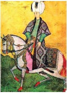

Tarihimizde Genç Osman adıyla da anılan II. Osman atı ‘Sisli Kır’ı o kadar çok severdi ki atı öldüğü zaman düzenlenen bir cenaze töreninin ardından Üsküdar’daki saray bahçesine gömülmüş ve başucuna da bir kitabe dikilmişti. Üsküdar’daki sarayın yıkılıp yerine Selimiye Kışlası ve camiinin yapılması sırasında atın mezarı da ortada bir yerde kalmıştı. Bu dönemde halk bu mezardan “At Evliyası” olarak söz etmeye başladı ve hastalanan atlar şifa bulsunlar diye bu mezara getirilmeye başlandı. Hasta atını buraya getiren sahibi atını mezarın çevresinde üç tur dolaştırıyor ve edilen duaların ardından atın iyileşeceği umuluyordu. Sonunda durum kontrolden çıkmaya başlayınca müze yetkilileri duruma el koydular ve bu değerli kitabeyi İstanbul Arkeoloji Müzesi’ne koyup mezarı da oradan kaldırdılar ve “At Evliyası” efsanesi böylece sona ermiş oldu. Boyu 96 cm. eni 72 cm. olan bu mezar taşının kitabesinde şu dörtlük yazılıdır:

Zılli Hak Hazreti Osman Hânın
(Hakkın koruyucusu Hazreti Osman Han’ın)
Sislikır nâm atı öğülmüştür
(Sisli Kır adındaki atı övülmüştür)
Emr-i Yezdan ile mevt irişicek
(Tanrı’nın emri ile ölüm erişince de)
Bu mekan içre o gömülmüştür
(Bu mekan içine o gömülmüştür)
Sene 1028 (Miladi: 1619)